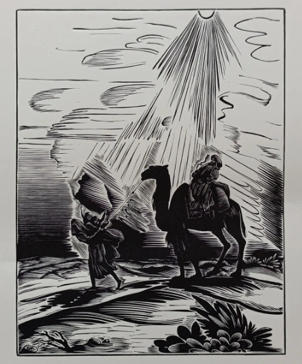
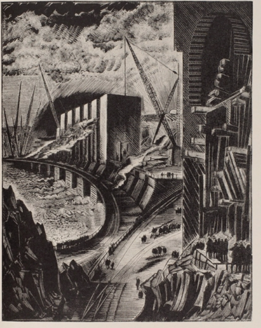

РЕЗЮМЕ
2026
ОТКРЫТ К СТАЖИРОВКЕ
AI-АГЕНТЫ
RAG
RETRIEVAL
АртурЗаплатин
Разрабатываю LLM/VLM-агентов и RAG-системы: от поиска по данным до честной оценки итогового качества.
01
Кратко обо мне
профиль и специализация
Студент 4-го курса УрФУ по направлению «Алгоритмы искусственного интеллекта» и выпускник Летней ML-академии Яндекса.
Мне интересны системы, в которых мало просто вызвать модель. Важно понять, когда нужен поиск, какой источник заслуживает доверия и почему изменение пайплайна действительно улучшило результат.
- Город
- Москва
- English
- B1
- Фокус
- LLM / VLM / RAG
02
Стек
технологии и инструменты
LLM и агенты
- Qwen 3.5 9B
- LangChain
- LangGraph
- tool use
- PyTorch
- Pydantic
Retrieval и RAG
- FAISS
- BM25
- E5
- RRF
- MMR
- reranking
- Ragas
Данные и backend
- Python
- pandas
- SQL
- SQLite
- FastAPI
- PDF / OCR
Инструменты
- Git
- Docker
- Linux
- Hugging Face
- OpenRouter
- pytest
03
Избранные проекты
задача, личный вклад, метрики
01
ML-АКАДЕМИЯ ЯНДЕКСА · 2026
VLM-агент с RAG по турецким учебникам
Агент сам обращается к поиску, проверяет найденные фрагменты и меняет исходный ответ только при надёжном подтверждении источником.
ИТОГОВЫЙ РЕЗУЛЬТАТ
91,6%
251 правильный ответ из 274
Проверить, помогает ли управляемый поиск по турецким учебникам VLM-агенту решать школьные задания лучше, чем та же модель без инструментов.
Собрать агента, который сам обращается к RAG, использует только надёжные материалы и не позволяет слабому контексту переписать верный ответ с изображения.
Реализовал агентный цикл: вызов RAG, передачу найденных фрагментов в решение, лимит до двух поисков, защиту от повторных запросов и историю вызовов с чанками, временем, ошибками и причиной завершения.
Подключил FAISS, фильтры по предмету и классу, порог качества, одну переформулировку запроса и приоритет изображения. Реализовал MMR и проверил fetch_k=20, top-5 и lambda 0,3 / 0,5 / 0,7.
Retrieval возвращал слабые, похожие или противоречивые фрагменты. Слабую выдачу скрывал порог, дубли разводил MMR, число вызовов ограничивал агент, а в спорной ситуации главным источником оставалось изображение.
Строгая работа с поиском дала рост до 91,6%. Пайплайн сохраняет исходный ответ модели и заменяет его только тогда, когда найденный источник надёжно подтверждает другое решение.
200учебников
42 981текстовый индекс
53 329визуальных страниц
+60ответов к агенту без инструментов
02
УЧЕБНЫЙ ПРОЕКТ · 2026
RAG-система по истории Урала
Воспроизводимый pipeline от загрузки PDF до ответа с источниками и честное сравнение пяти retrieval-стратегий.
GitHub проекта ↗

PDF→pages + chunks→BM25 + FAISS→RRF / rerank→OpenRouter→evaluation
Построить RAG по русскоязычным PDF об истории Урала и сравнить поиск на текстах с датами, фамилиями, географическими названиями и редкими терминами.
Выбрать retrieval-стратегию по измеримым метрикам, а не по нескольким удачным примерам.
Собрал полный цикл: извлечение и очистка текста, chunking, BM25 и FAISS индексы, Hybrid RRF, multi-query, reranking, генерацию через OpenRouter и отдельную оценку retrieval и ответов.
Обработал 1 433 страницы в 6 300 чанков. Сравнил пять методов на 25 вопросах при top_k=5. Считал Precision@5, Recall@5, Hit@5, MRR, answer F1, groundedness и Ragas sample.
BM25 был силён на точных именах и датах, а чистый semantic search терял часть совпадений. Общий reranker ухудшил метрики, поэтому я сохранил отрицательный результат и выбрал hybrid как устойчивую базу.
Hybrid RRF дал лучший Recall@5 0,8200 и MRR 0,7867. BM25 удерживает точные сущности, FAISS добавляет смысловые совпадения, а любое усложнение требует отдельной абляции.
| Метод | Precision@5 | Recall@5 | Hit@5 | MRR |
|---|---|---|---|---|
| BM25 | 0,5033 | 0,7933 | 0,9200 | 0,7333 |
| Semantic FAISS | 0,3267 | 0,7467 | 0,8000 | 0,6280 |
| Hybrid RRF | 0,4393 | 0,8200 | 0,9200 | 0,7867 |
| Multi-query | 0,4933 | 0,6600 | 0,7600 | 0,6600 |
| Hybrid + reranker | 0,3233 | 0,5933 | 0,6400 | 0,5033 |
04
Образование
фундамент и практические программы
Уральский федеральный университет
ИРИТ-РТФ · 09.03.01 «Алгоритмы искусственного интеллекта»
- Летняя ML-академия Яндексавыпускник · 2026
- Студкемп Яндекса«Алиса и умные устройства»
- Karpov.coursesML Engineer, MLOps, SQL · 2024-2025
ГОТОВ ОБСУДИТЬ СТАЖИРОВКУ ИЛИ JUNIOR-ПОЗИЦИЮ